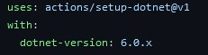

YAML (or “YAML Ain't Markup Language”) files are files that are used to store configurations and settings for an application. YAML is what is referred to as a “human-readable data serialisation format” which means that by design it should be simple to interpret and design without the need for specialist tools or file format conversions.
As we will see later when creating a YAML file there are a few rules you need to follow to ensure that they can be interpreted properly when ran. The first of these is indentation, which must be consistent throughout the entire document. If you wish to nest an object within your YAML file, you can do so by indenting a further two spaces.
It also should be noted that YAML files are created using key-value pairs that are separated by a colon. The left side of the colon will often contain the command you’re looking to execute, and the right side of the pair will contain the parameters that the command will use. You can nest commands inside commands using indentation if you wish – but at least one of the commands should have parameters passed to it.
When you have added a command to your YAML file you indicate that it has been completed using a line break. And if you wish to add comments to a YAML file you do so using the hash tag (#).
If you wish to separate your individual jobs into a list you can do so (and is recommended for legibility) you can do this by prefacing the start of your list element with a hyphen (-).
Above is a snippet of code from within a YAML file. The purpose of this code is to install the .NET SDK on the virtual machine that we are using to test our project.
It starts with a comment that is prefaced with a hashtag, explaining what this section of YAML does.
After this it then moves into the job, as this is a new job that we are adding to a list of jobs we preface the name of the job using a hyphen. The key value pair can also be seen clearly here. The “Name” element tells the YAML that we are naming this task and the “Setup .NET Core SDK” argument on the right and side of the colon tells the interpreter that we are naming the task the name provided.
The rest of the code performs in a similar way, the “uses” key value pair shows how we can use an action that has been created by someone else within our own custom created action. We are using the “setup-dotnet@v1” action that has been created especially for this purpose.
Then, as we are using two commands to tell the virtual machine which version of .net we wish to setup we must indent the second command using the two spaces rule we mentioned earlier.
This then all works together to tell the VM that we wish to setup the .NET SDK using the values that we gave it.